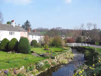
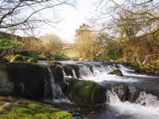
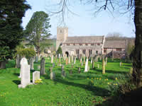

Caldbeck Tourist Information

{kind=link}
This superb walking-centre lays within easy reach of Carlisle, Penrith and Keswick and the lakes of Haweswater, Bassenthwaite and Ullswater.

{kind=link}

{kind=link}
This is a walkers and cyclists paradise of quiet roads and paths and climbs to the summits of Carrock Fell, Saddleback and Bowscale Fell. The surrounding villages of Mungrisdale, Hutton Roof and Hesket Newmarket are more than worthy of a visit. There is a good selection of Bed and Breakfast accommodation, Inns and Guest Houses offering comfortable resting places, a hearty breakfast and a packed lunch. Go and enjoy!
How to get there:
By rail: On the West Coast Main Line from London to Scotland, alight at Penrith station and continue the journey by road.
By road: Exit the M6 at J41 (Penrith) on the B5305 and follow signs to Caldbeck.
For more Caldbeck information, go to www.caldbeckvillage.co.uk
Attractions in Caldbeck |
Walking
Caldbeck stands on the route of the Keswick – Carlisle Cumbria Way. Without doubt, it is the centre for the authentic walking experience. Few places offer such a wide choice of rambles, ambles and treks. The walks to the summits of High Pike, and Carrock Fell afford magnificent views to the summits beyond and the stroll from Caldbeck village along the river banks to the limestone gorge of Howk and its waterfalls is a delight. Beyond is the challenge of Skiddaw, the forest trails of Dodd Wood and the gentle slopes of Uldale. These are only a taste of the walking opportunities in and around Caldbeck.
www.go4awalk.com and the Lake District National Park Authority, 015394 46601 for full details.
For those not familiar with the area, please be advised of the rapid weather changes which can take place, and, of the disused mining shafts on the fell sides.
The Area
The nearby village communities clearly manifest picturesque tranquility. Mungrisdale, Hutton Roof, Hesket Newmarket, allied comfortably to the fells of Bowscale, Great Calva, Knott and Saddleback have in some ways remained unchanged over the years. Not to be missed.
Cycling
Many options from which to choose.
Nearest Lakes
Ullswater, Haweswater, Bassenthwaite and Derwent Water.
Nearest Towns
Keswick and Penrith and the regions capital of Carlisle, a city which for centuries was the core of border conflicts. The Tullie House Museum and the Castle hold a wealth of historical material.
Saint Kentigerns Church
The church, central to the life of Caldbeck and also known as Mungo has undergone restoration over the centuries and little of the original 12th C structure remains. The churchyard holds the graves of the 19th C huntsman, John Peel and Mary Harrison, the “Beauty of Buttermere”. The song, “D’ye ken John Peel” was adopted as the anthem of the Border Regiment.
Hadrians Wall
An important historical reminder of the Roman Occupation and one of the regions main tourist attractions. It is within easy reach of Caldbeck via a choice of routes passing several places of interest.
Priests Mill
Priests Mill is an old watermill built by a rector of Caldbeck on the riverbank just below the Church. Almost hidden from the road, this award winning restoration now houses a restaurant, and various interesting shops.
Silloth On Solway Golf Club
Station Rd, Wigton, Silloth, CA7 4BL
Phone: 016973 31304
Solway Gym
Eden St., Wigton, Silloth, CA7 4AY
Phone: 016973 33000
Wigton Swimming Pool
Wigton , CA7 9AT
Phone: 016973 42412
Food and Drink in Caldbeck |
Watermill Café
Delicious Food using only the finest local produce served in a converted Watermill at Priest's Mill in Caldbeck, Cumbria.
Free Car Parking, Free Admission, Disabled Access & Facilities.
Phone: 016974 78267
www.watermillcafe.co.uk
Hesket Newmarket Brewery
Award winning real ales from one of the UK 's smallest local breweries.
Old Crown Barn, Hesket Newmarket, Cumbria CA7 8JG
Phone/Fax: 016974 78066
E-mail: info@hesketbrewery.co.uk
www.hesketbrewery.co.uk
The Old Crown
Dedicated to maintaining the essential character of the pub, The Old Crown serves the very best real ales, all brewed by the Hesket Newmarket Brewery which stands at the rear of Pub.
Situated in the heart of Hesket Newmarket, just 1.5 miles south east of Caldbeck in Cumbria.
Phone: 016974 78288
louhogg@onetel.com
www.theoldcrownpub.co.uk
Old Smithy Tea Room
A traditional Lakeland Tea Room and Gift Shop. Special Events Days during 2005 including Pottery Painting, Wood Turning Demonstrations and a free "Fairtrade Breakfast" morning.
Phone: 016974 78246
info@caldbeckvillage.co.uk
Oddfellows Arms
A traditional Lakeland Inn serving Real Ales from Jennings and good food.
Sour Nook Inn, Sebergham
Popular with locals for its excellent value bar meals.
Royal Oak, Welton
Recently refurbished, this promises to be an excellent dining pub restaurant.
The Snooty Fox, Uldale
Another traditional Inn serving Real Ales and good food.
www.snootyfoxuldale.co.uk
Transportation in Caldbeck |
Silloth Taxis
6 Station Rd, Wigton, Silloth, CA7 4AE
Phone: +44 (0)16973 31508
Stans taxis
4 Greenrow Bungalows, Wigton, Silloth, CA7 4HR
Phone: +44 (0)16973 33188
Station House Taxis
Station Ho/Station Rd, Wigton, CA7 9BA
Phone: +44 (0)16973 43148
Town Village Link
2/Garden Cottages/Meeting House La, Wigton, CA7 9EE
Phone: +44 (0)1697 344527